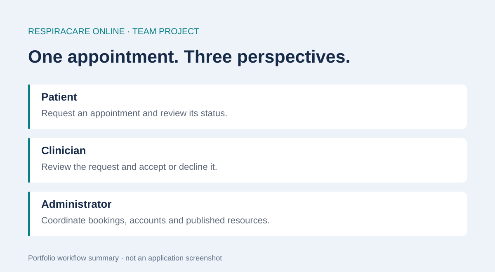

Team healthcare project · Monash IE · Team 188 · 2026
RespiraCare Online
A role-based platform supporting patient health logging, clinical review and appointment coordination.
- My role / scope
- Team project evidence. The supplied documents do not establish my individual ownership of each feature or deliverable.
- Evidence to inspect
- Workflow summary, documented test scope and an explicit acceptance-state review.
- Context
- Historical team documentation; not a live clinical service or a clinical-safety claim.


The connected workflow
| Role | Documented task | Information needed |
|---|---|---|
| Patient | Request an appointment; review status; submit measurements. | Own booking and health-record context. |
| Clinician | Review assigned requests and accept or decline. | Relevant patient and appointment information. |
| Administrator | Manage accounts, bookings, resources and website content. | Operational overview and controlled administrative actions. |
Review the evidence before claiming acceptance
The supplied internal test document contains 45 case rows: 42 marked Pass and 3 Pass with note. Those are historical team-recorded results, not tests rerun for this portfolio. The UAT document has blank result and client sign-off fields, so client acceptance is not claimed.
Earlier planning mentions AI navigation; the final TechDoc and Run Sheet exclude the AI companion from the current build. Security controls described in prose require implementation evidence before they can be treated as verified.
Why this case is included
This case shows the team’s healthcare workflow and the distinction between documentation, test execution and client approval. Detailed screenshots, the dictionary and handover artefacts remain in the restricted evidence collection. Specific individual feature ownership is not asserted without contribution records.
Continue the conversation
Want to discuss the decisions?
I can walk through the evidence and explain the boundaries of my contribution.